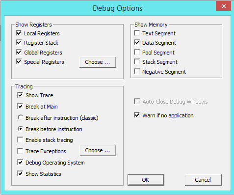

You reach the MMIX debugger options through the Options menu.
Next to the checkbox for the special registers is a Choose button. Pressing it opens a dialog where you can choose which registers to display in the special register window. Depending on the problem you are trying to debug, some registers may be relevant and others not at all. Only the registers selected here will be shown in the special register window.
The "classic" behaviour of the MMIX debuger is to stop after the instruction, so that you can see in the trace what the instruction just has done.
Other source code debuggers (for example gdb) usualy stop before executing the instruction. This has the advantage, that you can inspect registers and memory before the instruction, that advance the program to the next instruction and see the changes. It can also be convenient to stop at a branch instruction before it gets executed and then see where it will take the machine.
If this box is unchecked, no such information is given.
If the box is shaded, a subset of the eight possible arithmetic exceptions has be selected for tracing. To change the set of traced exceptions press the Choose button to the right. A window will open that lets you select or deselect the various arithmetic exceptions for tracing.